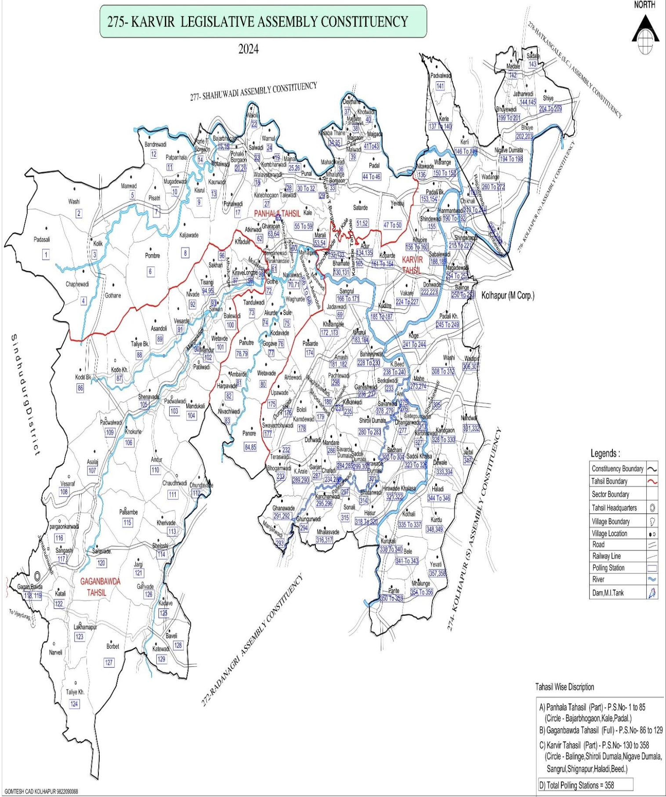

मतदार संघाचे नाव: 275 करवीर विधानसभा मतदार संघ
मतदार संघाचा प्रकार: सामान्य
तालुक्याचे नाव: करवीर
एकूण मतदान केंद्रे: 368
ठिकाण: तहसील कार्यालय करवीर
| अ. क्र. | मतदान केंद्राचे नाव | पूर्ण नाव | मोबाईल नंबर |
|---|
ही यादी लवकरच उपलब्ध केली जाईल.
मतदार नोंदणीसाठी आवश्यक कागदपत्रे, वेळापत्रक व प्रक्रिया याबाबतची माहिती येथे समाविष्ट केली जाईल.

निवडणुकीसंबंधी इतर सर्व माहिती वेळोवेळी अद्यतनित केली जाईल.